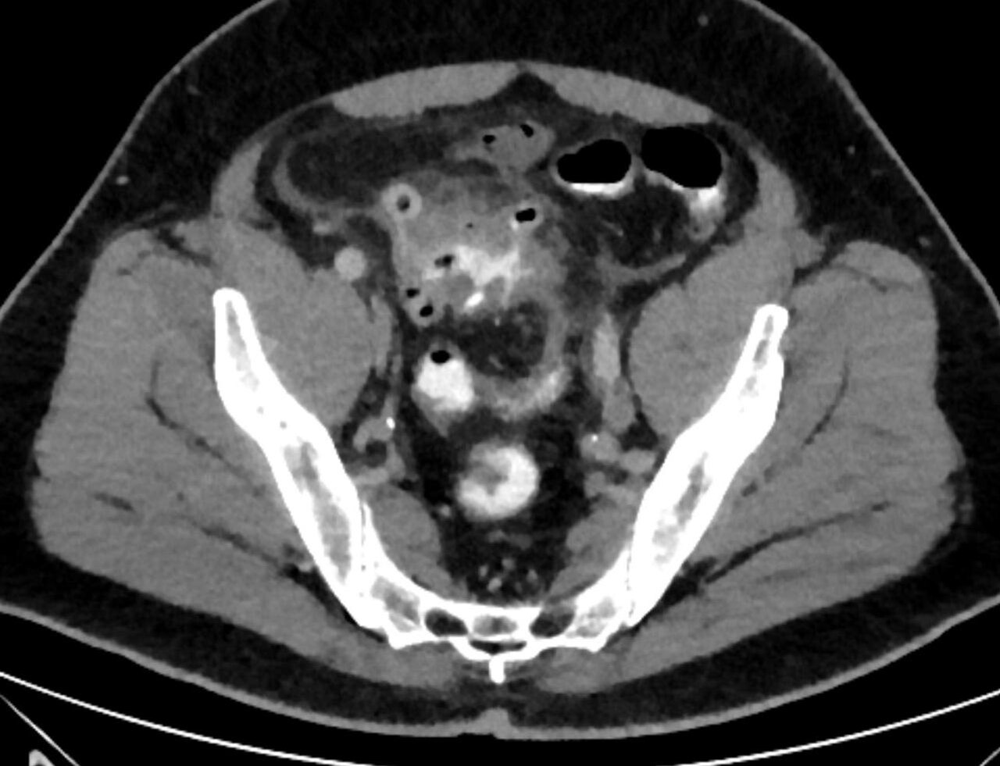

Ficha del catálogo
Diverticulitis aguda
- Sistema
- Digestivo
- Modalidad
- TC
- Región
- Colon, predominio sigmoides
- Dificultad
- Intermedio
Es la inflamación de uno o varios divertículos colónicos, habitualmente por obstrucción del cuello diverticular con microperforación posterior. Afecta sobre todo al sigmoides en la población occidental y al colon derecho con mayor frecuencia en poblaciones asiáticas. Se manifiesta con dolor en la fosa iliaca izquierda, fiebre y leucocitosis, y su gravedad varía desde un cuadro leve hasta la peritonitis fecaloidea.
Técnica
La tomografía con contraste intravenoso es el estudio de elección por su precisión para confirmar el diagnóstico y estadificar la gravedad. Se emplea contraste oral neutro o positivo según el protocolo del servicio, y en casos seleccionados se añade contraste rectal para valorar fugas. Se adquiere en fase portal, con cortes finos y reconstrucciones coronales que facilitan la valoración del sigmoides.
Qué observar
- Divertículos colónicos y engrosamiento parietal segmentario mayor de 4 mm
- Trabeculación e infiltración de la grasa pericolónica adyacente al segmento afectado
- Colecciones o abscesos, precisando su tamaño y su accesibilidad para drenaje percutáneo
- Burbujas de gas extraluminal, localizadas o a distancia, y neumoperitoneo
- Líquido libre, engrosamiento de las fascias y signos de peritonitis
- Fístulas hacia vejiga, vagina o intestino, sospechadas ante gas en órganos vecinos
Hallazgos
Se identifica un segmento colónico con divertículos, pared engrosada y densificación de la grasa pericolónica desproporcionadamente llamativa respecto al grosor de la pared. Puede acompañarse de líquido, engrosamiento de la fascia lateroconal y de la raíz del mesosigma, y de ingurgitación de los vasos mesentéricos. Las formas complicadas muestran abscesos con pared que realza, gas extraluminal, líquido libre generalizado, obstrucción o trayectos fistulosos. La presencia de contraste oral o rectal fuera de la luz confirma la perforación.
Perlas
Cuando la inflamación de la grasa pericolónica es mucho mayor que el engrosamiento de la pared, el cuadro favorece diverticulitis; en cambio, un engrosamiento parietal marcado y desproporcionado con adenopatías locorregionales debe hacer sospechar carcinoma de colon perforado. Como ambos pueden coexistir y la imagen aguda no siempre los distingue, es prudente recomendar colonoscopia de control tras la resolución del episodio en pacientes con hallazgos atípicos o sin estudio endoscópico reciente.
Diagnóstico diferencial
- Carcinoma de colon perforado
- Engrosamiento parietal corto, asimétrico y con hombros abruptos, más adenopatías locorregionales y menor inflamación grasa relativa.
- Apendicitis aguda
- Se centra en el apéndice, dilatado y con pared realzada (relevante cuando existe diverticulitis del colon derecho).
- Apendagitis epiploica
- Lesión ovoide de densidad grasa con anillo hiperdenso adyacente al colon, sin engrosamiento parietal significativo.
- Colitis isquémica
- Afectación segmentaria en territorio vascular, con pared edematosa y a veces neumatosis, sin divertículos inflamados.
- Enfermedad inflamatoria intestinal
- Curso crónico con afectación más extensa, proliferación fibrograsa y antecedentes conocidos.
Simuladores
- Apendagitis epiploica e infarto omental, que producen dolor focal intenso con hallazgos limitados a la grasa
- Diverticulosis sin inflamación acompañada de dolor de otro origen
- Colitis infecciosa segmentaria en un colon con divertículos preexistentes
Por modalidad
- TC
- Es el método de referencia: Confirma el diagnóstico, define la gravedad, detecta abscesos y guía el drenaje percutáneo
- US
- Alternativa inicial en pacientes delgados y jóvenes; la compresión graduada localiza el punto de máximo dolor y muestra el divertículo inflamado
- RM
- Opción sin radiación en embarazadas y en el seguimiento de pacientes jóvenes con episodios recurrentes
Protocolo
Tomografía abdominopélvica en fase portal a los 70 a 80 segundos tras contraste intravenoso, con cortes de 1 a 3 mm y reconstrucciones coronales y sagitales. El contraste oral es opcional y el rectal se reserva para casos con sospecha de fuga o de fístula. En pacientes con contraindicación al contraste intravenoso el estudio simple aún permite identificar la inflamación grasa, el gas extraluminal y las colecciones.
Clasificación
La clasificación de Hinchey estratifica la diverticulitis complicada en cuatro estadios. El estadio I corresponde a un flemón o absceso pericólico. El estadio II a un absceso pélvico, retroperitoneal o a distancia. El estadio III a peritonitis purulenta generalizada. El estadio IV a peritonitis fecaloidea por perforación libre. Existen versiones modificadas que separan el flemón del absceso pequeño y que integran hallazgos tomográficos, y son las que mejor se correlacionan con la decisión entre tratamiento médico, drenaje percutáneo y cirugía urgente.
Errores frecuentes
- Atribuir a diverticulitis un engrosamiento que en realidad corresponde a un carcinoma de colon y no recomendar colonoscopia diferida
- Pasar por alto burbujas de gas extraluminal aisladas al no revisar con ventana adecuada
- No describir el tamaño ni la accesibilidad de un absceso, dato que determina si es drenable por vía percutánea

diverticulitis Hinchey sigmoides absceso grasa pericolonica abdomen agudo tomografia